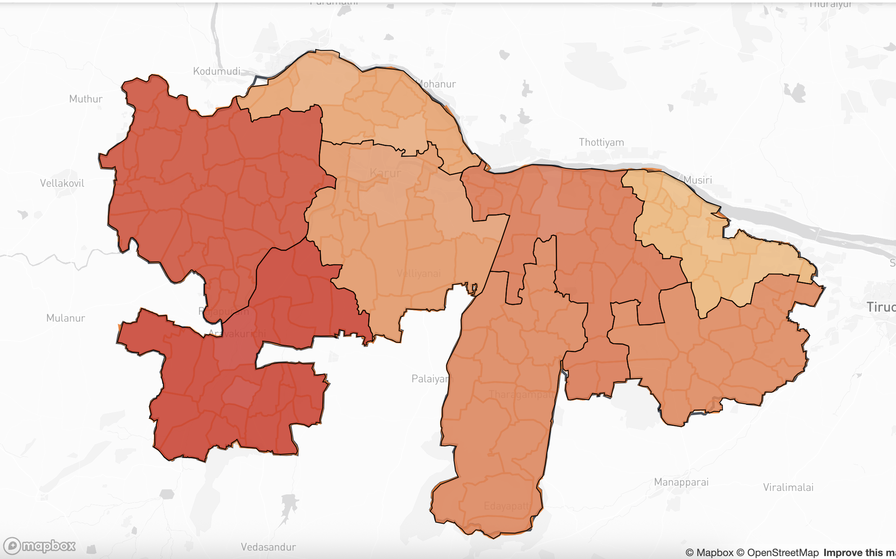
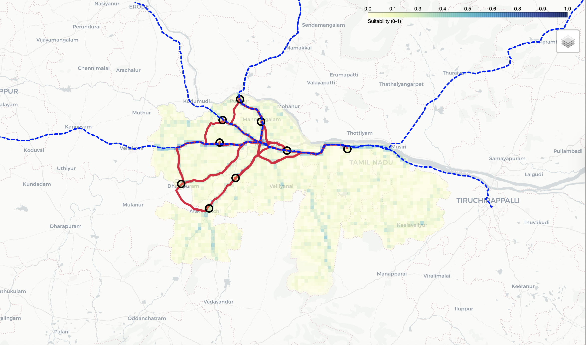
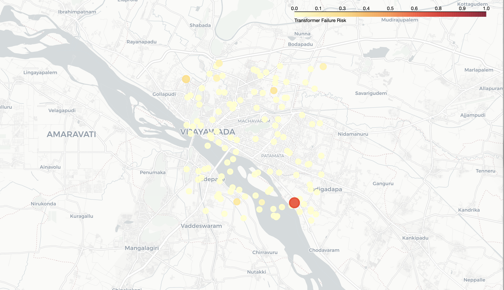

Flagship Projects

Karur Regional Insights Dashboard
An interactive web dashboard visualizing key regional data for Karur district, featuring a built-in analysis of block-level service accessibility.

Water Quality Visualization Hub
A web based mapping application to monitor, visualize, and analyze water quality indicators across various locations.

GeoAI-Powered Urban Logistics
Geospatial AI to optimize urban freight routes, enhance last-mile delivery efficiency, and create sustainable logistics solutions for smart cities.

Equicity.tech: Urban Grid Resilience
An Platform that models power grid vulnerabilities and optimizes the location of critical infrastructure to enhance resilience.